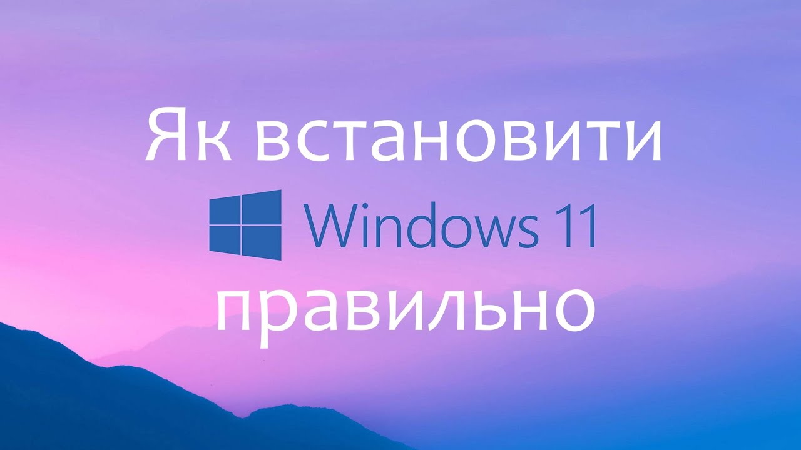

Як встановити Windows 11

Після завершення підтримки Windows 10 користувачам необхідно переходити на Windows 11. У цій інструкції коротко пояснено, як правильно встановити нову операційну систему.
Для початку вам знадобиться USB-флешка обсягом щонайменше 12 ГБ. Саме стільки пам’яті потрібно для інсталяційних файлів Windows 11. Завантажити офіційний образ системи можна з сайту Microsoft і створити завантажувальну флешку за допомогою спеціальної утиліти.
Далі необхідно зайти в BIOS. Для цього перезавантажте комп’ютер і під час запуску натискайте клавішу Del або F2 (залежно від моделі материнської плати). У BIOS відкрийте розділ Boot і встановіть USB-флешку першою в списку завантаження. Це дозволить комп’ютеру запустити інсталятор Windows саме з флешки.
Після зміни налаштувань натисніть F10, підтвердіть збереження та перезавантаження. Після цього автоматично розпочнеться процес встановлення Windows 11.
Дотримуючись цих простих кроків, ви зможете без проблем встановити Windows 11 і продовжити безпечну та стабільну роботу за комп’ютером.